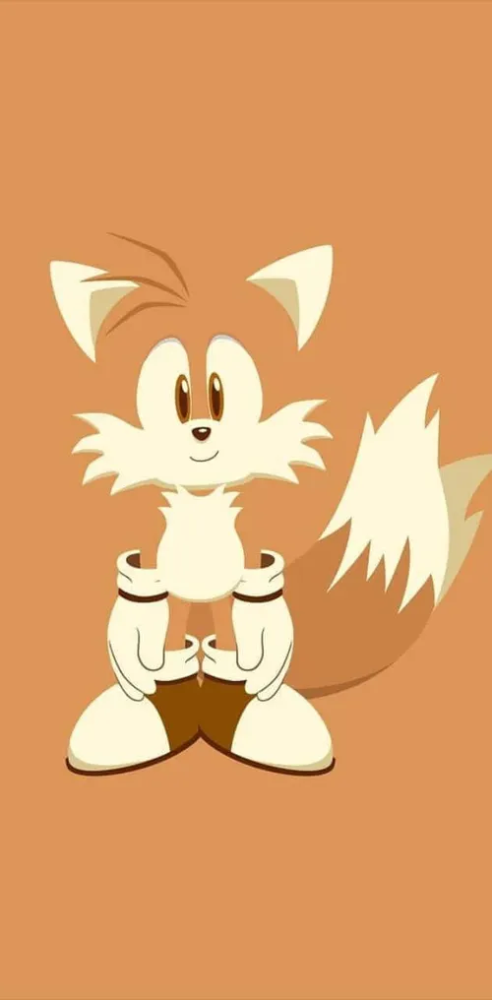
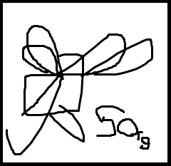
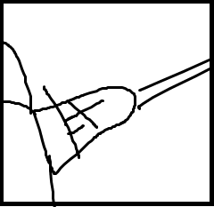

La gata mas escurridiza.
Una gata unica y especial, de su meme sus increíbles habilidades pero con eso sus consecuencias y dificultades.

Vida: 100
Resistencia: 100
Ef. Pasivos: Se sana 5 de vd cada 60sg, si esta cerca de su mismo personaje 7 de vd (no es acumulable).
Habilidades especiales
1-Run!: Se desliza por 5 sg a la dirección que vea, es invulnerable durante ese tiempo. Gana 5% de velocidad despues de la habilidad por 5 sg Recarga: 40sg.

2-Una vida por una vida: Al activarse sacara unas galletas sanadoras. El primer personaje en entrar a su pequeño radio empezará a sanarse. Se le quita 1 de vida por cada 10 de vida que le sana al personaje acercado (no puede sanar a su mismo personaje), después de sanarle 50 de vida parara la sanación. Recarga: 50sg.

LMS SPECIAL: La habilidad 2 le dara 5% mas de velocidad por 7 sg, pero su habilidad pasiva cambia a 0.5 de vida cada 20sg.